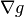
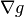
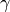
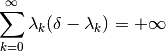

proximal_gradient¶
-
odl.solvers.nonsmooth.proximal_gradient_solvers.proximal_gradient(x, f, g, gamma, niter, callback=None, **kwargs)[source]¶ (Accelerated) proximal gradient algorithm for convex optimization.
Also known as “Iterative Soft-Thresholding Algorithm” (ISTA). See [Beck2009] for more information.
This solver solves the convex optimization problem:
min_{x in X} f(x) + g(x)
where the proximal operator of
fis known andgis differentiable.Parameters: - x :
f.domainelement Starting point of the iteration, updated in-place.
- f :
Functional The function
fin the problem definition. Needs to havef.proximal.- g :
Functional The function
gin the problem definition. Needs to haveg.gradient.- gamma : positive float
Step size parameter.
- niter : non-negative int, optional
Number of iterations.
- callback : callable, optional
Function called with the current iterate after each iteration.
Other Parameters: - lam : float or callable, optional
Overrelaxation step size. If callable, it should take an index (starting at zero) and return the corresponding step size. Default: 1.0
Notes
The problem of interest is
where the formal conditions are that
 is proper, convex and lower-semicontinuous,
and is differentiable and
 is -Lipschitz continuous.
is proper, convex and lower-semicontinuous,
and is differentiable and
 is -Lipschitz continuous.Convergence is only guaranteed if the step length  satisfies
and the parameter
 (
(lam) satisfies
where .
References
- x :